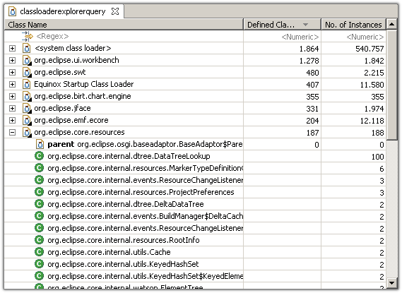

Class loaders load classes into the memory of the JVM. When
analyzing the heap, class loaders are very important for two reasons:
First, applications typically load components using separate class
loaders. Second, the loaded classes are usually stored in a separate space (e.g. the perm space)
which can also be depleted.
Class Loader Explorer
To get an overview, run the
inspection on the heap dump.
- The Memory Analyzer attaches a meaningful label to the class
loader - in the case of OSGi bundles it is the bundle id. Looking
out for duplicate entries!
- Next to the class loader name, the table contains the defined
classes and the number of live instances. If one and the same
component is loaded multiple times, the number of live instances
can indicate which class loaders is more alive and which one
should be garbage collected.

Find more information in this blog posting:
The Unknown Generation: Perm